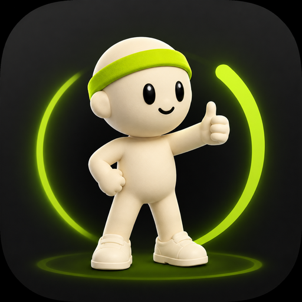

Tiny CoachTiny Coach プライバシーポリシー
Tiny Coach（以下「本アプリ」）は、iPhone と Apple Watch で使うオフラインのワークアウトアプリです。本ポリシーでは、本アプリが扱う情報とその取り扱いについて説明します。
1. 収集しない情報
本アプリの開発者は、利用者の個人情報を収集・保存・販売しません。本アプリはアカウント登録を必要とせず、開発者が運営するサーバーへデータを送信することはありません。広告やトラッキングは使用していません。iPhone アプリが使用する第三者の SDK は、第3項で説明する匿名の使用状況データの送信に使う TelemetryDeck のみです。
2. ヘルスケアデータ（HealthKit）
利用者が許可した場合に限り、本アプリは Apple の HealthKit を次の目的で使用します。
- Apple Watch でのワークアウト中に、心拍数とアクティブエネルギーを読み取り、画面に表示します。
- 完了したワークアウトを「ヘルスケア」アプリに保存します。
- iPhone では、本アプリが保存したワークアウトを読み取り、トレーニング履歴を復元します。
ヘルスケアデータは利用者のデバイス上（および利用者が設定した場合は Apple の iCloud）にのみ保存され、開発者や第三者に送信されることはありません。広告やマーケティングに使用することもありません。アクセス許可は「設定」＞「ヘルスケア」＞「データアクセスとデバイス」からいつでも変更できます。
3. 匿名の使用状況データと診断情報（iPhone）
本アプリの改善と不具合の修正のため、iPhone アプリは TelemetryDeck を通じて次の匿名データを送信します。
- 使用状況イベント（製品の操作）：オンボーディング、コースの閲覧、ワークアウトの開始と完了、購入画面の表示、設定の変更など、アプリ内でどの操作が行われたか。
- 診断情報：Apple の MetricKit が提供するクラッシュ、フリーズ（ハング）、パフォーマンス（起動時間、CPU、ディスク書き込みなど）のレポート。
イベントに付く値は、あらかじめ決められた選択肢の値、回数、一定の範囲ごとに区切った時間、エラーコードのみです。名前、メールアドレス、正確な位置情報、利用者が入力した文章、ヘルスケアデータを送信することは一切ありません。これらのデータは利用者に紐づけられず、トラッキングにも使用されません。Apple Watch アプリはデータを一切送信しません。
この機能は初期設定でオンになっています。iPhone アプリの「設定」＞「匿名の使用状況データを共有」からいつでもオフにでき、オフにするとただちに送信が止まります。TelemetryDeck によるデータの取り扱いについては TelemetryDeck のプライバシーポリシーをご覧ください。
4. デバイス上に保存される情報
本アプリは動作に必要な次の情報を、利用者のデバイス内にのみ保存します：選択中のコース、設定（触覚・サウンド・音楽・週の目標など）、トレーニング記録、購入状態のキャッシュ、コーチ音声ファイル。これらは iPhone と、ペアリングされた利用者自身の Apple Watch の間で Apple の WatchConnectivity を通じて直接同期されます。本アプリを削除すると、これらの情報も削除されます（「ヘルスケア」に保存したワークアウトは「ヘルスケア」アプリに残ります）。
5. App 内課金
サブスクリプションと買い切りの購入は、すべて Apple の App Store が処理します。開発者が支払い情報や Apple ID を受け取ることはありません。本アプリはデバイス上の StoreKit を通じて購入状態のみを確認します。購入に関する情報の取り扱いは Apple のプライバシーポリシーに従います。
6. お子さまのプライバシー
本アプリは個人情報を収集しないため、13歳未満のお子さまの個人情報を収集することもありません。
7. 本ポリシーの変更
本ポリシーを変更する場合は、このページを更新し、施行日を改めます。
8. お問い合わせ
本ポリシーに関するお問い合わせは f.shera.09@gmail.com までご連絡ください。
Tiny Coach Privacy Policy
Tiny Coach (“the app”) is an offline workout app for iPhone and Apple Watch. This policy explains what information the app handles and how.
1. Information we do not collect
The developer of Tiny Coach does not collect, store, or sell your personal information. The app requires no account and never sends data to any server run by the developer. It contains no advertising or tracking. The only third-party SDK in the iPhone app is TelemetryDeck, used solely for the anonymous usage data described in section 3.
2. Health data (HealthKit)
Only with your permission, the app uses Apple HealthKit to:
- read your heart rate and active energy during a workout on Apple Watch so they can be shown on screen;
- save completed workouts to the Health app;
- on iPhone, read the workouts Tiny Coach saved so it can restore your training history.
Health data stays on your devices (and in Apple’s iCloud if you have enabled that). It is never sent to the developer or to any third party, and it is never used for advertising or marketing. You can change this permission at any time in Settings > Health > Data Access & Devices.
3. Anonymous usage data and diagnostics (iPhone)
To improve the app and fix problems, the iPhone app sends the following anonymous data through TelemetryDeck:
- usage events (product interaction): which actions happen in the app, such as onboarding steps, browsing courses, starting and finishing a workout, viewing the purchase screen, or changing a setting;
- diagnostics: crash, hang, and performance reports (such as launch time, CPU, and disk writes) provided by Apple’s MetricKit.
Event parameters are limited to predefined values, counts, durations grouped into ranges, and error codes. The app never sends your name, email address, precise location, any text you type, or Health data. This data is not linked to you and is not used for tracking. The Apple Watch app sends nothing.
This is on by default. You can turn it off at any time in the iPhone app under Settings > “Share anonymous usage data”, and sending stops immediately. For how TelemetryDeck handles data, see TelemetryDeck’s Privacy Policy.
4. Information stored on your device
To work, the app keeps the following only on your device: your selected course, preferences (haptics, sounds, music, weekly goal, and similar), training records, a cached copy of your purchase status, and coach audio files. These are synced directly between your iPhone and your own paired Apple Watch through Apple’s WatchConnectivity. Deleting the app deletes this information (workouts saved to Health remain in the Health app).
5. In-app purchases
Subscriptions and one-time purchases are processed entirely by Apple’s App Store. The developer never receives your payment details or Apple ID. The app only checks your purchase status on device through StoreKit. Purchase information is handled under Apple’s Privacy Policy.
6. Children’s privacy
Because the app collects no personal information, it does not collect personal information from children under 13.
7. Changes to this policy
If this policy changes, this page will be updated with a new effective date.
8. Contact
Questions about this policy can be sent to f.shera.09@gmail.com.
Tiny Coach 隐私政策
Tiny Coach（以下简称“本应用”）是一款在 iPhone 和 Apple Watch 上离线使用的健身应用。本政策说明本应用会处理哪些信息以及如何处理。
1. 我们不收集的信息
本应用的开发者不会收集、存储或出售你的个人信息。本应用无需注册账号，也不会向开发者运营的任何服务器发送数据。本应用不含广告或追踪功能。iPhone 应用中唯一的第三方 SDK 是 TelemetryDeck，仅用于第 3 条所述的匿名使用数据。
2. 健康数据（HealthKit）
仅在你授权的情况下，本应用使用 Apple HealthKit 来：
- 在 Apple Watch 上训练时读取心率和活动能量，并显示在屏幕上；
- 将完成的训练保存到“健康”App；
- 在 iPhone 上读取本应用保存过的训练记录，用于恢复你的训练历史。
健康数据只保存在你的设备上（如你已开启，也会保存在 Apple 的 iCloud 中），绝不会发送给开发者或任何第三方，也绝不会用于广告或营销。你可以随时在“设置”＞“健康”＞“数据访问与设备”中更改授权。
3. 匿名使用数据与诊断信息（iPhone）
为了改进本应用并修复问题，iPhone 应用会通过 TelemetryDeck 发送以下匿名数据：
- 使用事件（产品交互）：应用内发生了哪些操作，例如引导流程、浏览课程、开始和完成训练、查看购买页面、更改设置等；
- 诊断信息：由 Apple 的 MetricKit 提供的崩溃、卡顿以及性能（如启动时间、CPU、磁盘写入）报告。
事件附带的参数仅限预先定义的选项值、次数、按区间划分的时长以及错误代码。本应用绝不会发送你的姓名、邮箱、精确位置、你输入的任何文字或健康数据。这些数据不与你关联，也不会用于追踪。Apple Watch 应用不发送任何数据。
此功能默认开启。你可以随时在 iPhone 应用的“设置”＞「分享匿名使用数据」中关闭，关闭后会立即停止发送。TelemetryDeck 如何处理数据，请参阅 TelemetryDeck 隐私政策。
4. 保存在设备上的信息
为正常运行，本应用仅在你的设备上保存以下信息：当前选择的课程、偏好设置（触感、声音、音乐、每周目标等）、训练记录、购买状态的缓存以及教练语音文件。这些信息通过 Apple 的 WatchConnectivity 在你的 iPhone 与你自己配对的 Apple Watch 之间直接同步。删除本应用即会删除这些信息（已保存到“健康”的训练记录会保留在“健康”App 中）。
5. App 内购买
订阅和一次性购买全部由 Apple 的 App Store 处理。开发者不会获得你的支付信息或 Apple ID。本应用仅通过设备上的 StoreKit 确认购买状态。购买相关信息的处理适用 Apple 隐私政策。
6. 儿童隐私
由于本应用不收集任何个人信息，因此也不会收集 13 岁以下儿童的个人信息。
7. 政策变更
如本政策有变更，我们会更新本页面并修改生效日期。
8. 联系方式
如对本政策有任何疑问，请发送邮件至 f.shera.09@gmail.com。